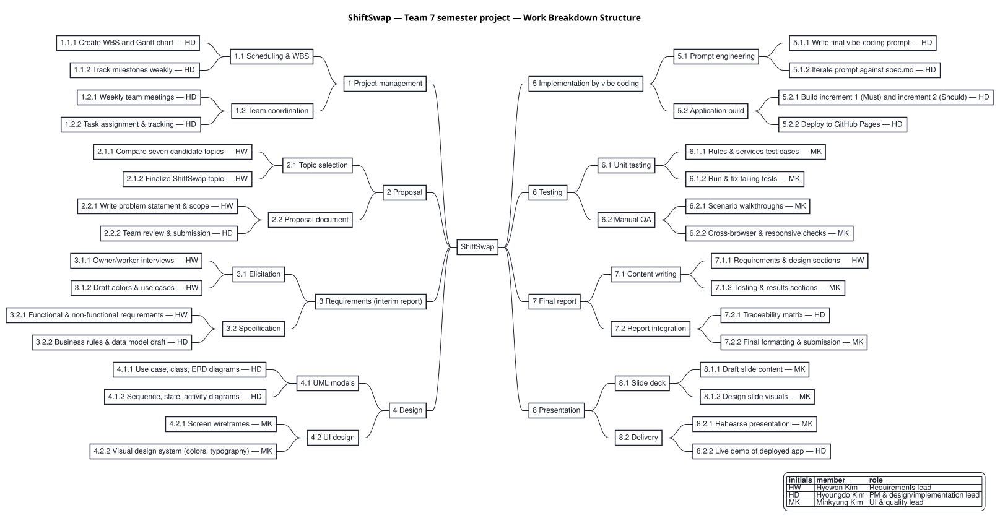
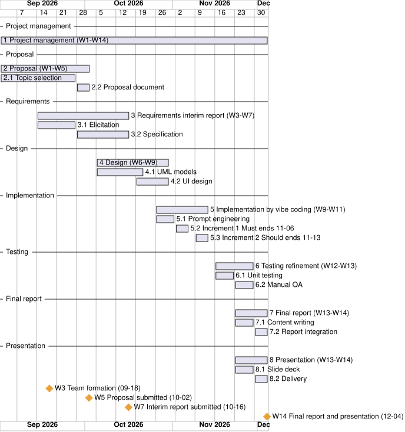

소규모 매장 아르바이트 근무표·대타 관리 시스템
| Name | Student ID | Affiliation | |
|---|---|---|---|
| Hyewon Kim (김혜원) | 24102028 | Dept. of Industrial Engineering, ITM Program, SeoulTech | gokhw123@g.seoultech.ac.kr |
| Hyoungdo Kim (김형도) | 18102075 | Dept. of Industrial Engineering, ITM Program, SeoulTech | domo5776@seoultech.ac.kr |
| Minkyung Kim (김민경) | 23102004 | Dept. of Industrial Engineering, ITM Program, SeoulTech | min23@g.seoultech.ac.kr |
Small stores such as cafés, convenience stores and restaurants often run with fewer than ten part-time workers. Each worker has fixed weekly shifts, for example every Monday from 18:00 to 23:00. Workers are often students, so exams and other duties regularly make them miss a shift. When this happens, somebody else has to cover the shift.
In most such stores the substitute is found by telephone or chat message. The owner contacts other workers one at a time until one of them agrees. The owner then edits the schedule spreadsheet by hand. The swap is not only a schedule change. It also changes the weekly hours of two workers, and in Korea weekly hours decide whether the weekly holiday allowance (주휴수당) is owed. At month end the owner has to reconstruct these changes to pay each worker correctly.
Korean pay rules for part-time work are detailed. The 2026 minimum hourly wage is KRW 10,320 [1, 2]. A worker whose weekly contractual hours are 15 or more and who attended every scheduled day is entitled to a paid weekly holiday [3, 5]. Overtime and night premiums apply only in workplaces with five or more regular employees [3]. In such workplaces, hours that a part-time worker works beyond their contractual hours also earn a premium of 50 %, need the worker's consent and may not exceed 12 hours a week [10], and accepting a substitute shift usually creates such hours. The minimum wage may be reduced to 90 % during probation only under specific conditions [4]. An owner of a four-person café applies these rules from memory. Errors are found on payday or later.
General chat applications broadcast a message but do not know who is free, who answered first, or what a swap does to pay. Scheduling products abroad already support a substitute workflow. In Deputy a worker can offer a shift to co-workers who are qualified and available; the manager is notified when the offer is accepted, and swaps can be set to require the manager's approval [11]. When I Work lets a worker offer a shift to all or selected eligible co-workers, subject by default to a manager's approval, and its Find Replacement function notifies qualified workers and gives the shift to the first one who picks it up [13, 14]. In Homebase a worker asks all or selected co-workers to cover a shift, and a manager gives final approval after one of them accepts [15]; Homebase also advertises that managers see conflicts with the labour budget and compliance policies before approving a swap [16]. These products are hard to adopt in a small Korean store. Deputy, for example, offers its employee app in Korean, but its web interface, where schedules are managed, is available only in English [12]. In the help centres of all three products we found no mention of the Korean weekly holiday allowance.
Korean products follow a different workflow, in which the manager edits the schedule or an employee sends a change request to the manager. Shiftee lets an employee request a new or changed shift, tags the request when it involves overtime, night or holiday work, and computes the weekly holiday allowance automatically [17, 18]. Its help centre states that the allowance is recognised only when every contractual working day is worked, so that a worker contracted for Monday to Friday who works Tuesday to Saturday is not eligible [18]. Shopl lets employees request schedule changes that the manager approves or rejects [19]. Albami lets the owner manage recurring and daily schedules and set the holiday allowance for each worker [20], and Gig shares the owner's schedule with the workers and manages allowances including the holiday allowance [21]. The public feature descriptions of these four products do not include a substitute request between co-workers.
We found no product that combines the co-worker substitute request with the Korean holiday-allowance rule, that is, one that shows the owner at the moment of approval how a swap changes the holiday-allowance eligibility of both workers. Read literally, the Shiftee rule also removes the allowance of a worker who hands a shift to a colleague; ShiftSwap leaves this case to a store setting (Section 10, R1). The proposed system, ShiftSwap, therefore adopts the substitute workflow that these products have proven in practice and applies the Korean pay rules to it. It is a conventional transaction-processing business application, as the course recommends: it records shifts, requests, responses, approvals, attendance and payroll, and applies fixed business rules to each transaction.
The overall goal is to deliver a working web application that replaces the telephone-and-spreadsheet process of a small store for three tasks: finding a substitute, keeping the schedule correct, and computing weekly holiday allowance and monthly pay. The goals below are stated so that each one can be checked at the end of the project. Identifiers in this proposal refer to later parts of the project: UC-xx are the use cases of Table 4 (Section 5.2), BR-xx the business rules described in Section 5.3, FR-xx and NFR-xx the functional and non-functional requirements that will be specified in the interim report, and TC-xx the unit-test groups of work package 6.1.
| ID | Goal | Measure / acceptance check | Problem |
|---|---|---|---|
| G1 | Remove the owner's one-to-one contacts when a substitute is needed. | The owner makes 0 contacts per request (reference store today: 3–5). All eligible workers are notified in the same transaction that creates the request (FR-07). The owner's only action is one approve or reject decision. | P1 |
| G2 | Let a candidate answer quickly. | A candidate accepts a request in at most 2 clicks from the inbox (NFR-01). | P1 |
| G3 | Keep the schedule and weekly hours of both workers correct after every swap. | On approval, the shift is reassigned and the weekly summaries of both workers are recomputed with no manual step (FR-12). The approval screen shows both workers' hours and eligibility before and after the swap (FR-11). | P2 |
| G4 | Apply the legal pay rules automatically and flag violations before payday. | Business rules BR-06 to BR-11 are implemented as tested functions. Every business rule has at least one unit test. The payroll screen warns when a wage is below the applicable minimum and blocks confirmation until the warning is acknowledged (FR-16). | P3 |
| G5 | Deliver a system of the size the course requires. | At least 5 core use cases (planned: 13, of which 9 are core) and at least 4 database tables (planned: 12). | – |
| G6 | Deliver on time and reproducibly. | Working system deployed at a public URL by Week 14 (2026-12-04, NFR-07). Re-running the final prompt in an empty folder produces a system that passes the same unit tests. | – |
The topic was proposed by Hyewon Kim from her own part-time job. Her workplace is our reference store. It is a small store with fewer than ten part-time workers, and the owner also acts as the manager. We selected this topic on 2026-09-27 after comparing seven candidate topics. The current process for a missed shift is as follows.
Each step is manual. No step keeps a record of who was asked, who answered, or when the owner agreed. The spreadsheet is the only record of the swap, and it holds the result, not the reason.
P1 Finding a substitute costs the owner repeated one-to-one contacts (reference store: typically 3–5 contacts per request).
P2 The schedule, weekly hours and holiday-allowance eligibility of two workers change with every swap, and all recalculation is manual.
P3 Legal pay rules (minimum wage, holiday allowance, 5-employee threshold for premiums, overtime of part-time workers beyond contractual hours, probation reduction) are applied from memory, so errors are not caught before payday.
P2 needs an example. Suppose Lee Seoyeon (fixed shifts Monday and Wednesday 18:00–23:00, 10 hours per week) gives her Wednesday shift to Choi Minho (fixed shifts 16 hours per week). Her scheduled hours for that week fall from 10 to 5. His rise from 16 to 21. His contractual hours stay at 16, so he remains eligible for the holiday allowance: 16 / 40 × 8 = 3.2 hours, which is 3.2 × 10,320 = KRW 33,024. Her contractual hours stay at 10, so she is not eligible either way. In a store with five or more regular employees, his five hours beyond contract would also earn the 50 % premium for part-time workers [10]. The owner currently has to work this out by hand for every swap.
P3 has a further difficulty. The law does not say directly whether a shift that was handed over by agreement breaks the worker's “perfect attendance” for the week. Section 10 explains how the system treats this.
We classify every function by MoSCoW priority. Must functions form the first increment; Should functions form the second increment (Section 6). Won't items are outside this project.
| Priority | Included items |
|---|---|
| Must | UC-01, UC-02, UC-03, UC-04, UC-05, UC-06, UC-08, UC-11, UC-13 and the in-app notification inbox (FR-21). Together they form a usable system: a store can find substitutes, approve swaps and see weekly holiday-allowance eligibility. |
| Should | UC-07 attendance, UC-09 payroll with minimum-wage and probation checks, UC-10 settings, UC-12 cancellation, and the part-time overtime warning of the approval panel (F6). |
| Won't | KakaoTalk or SMS messaging (notifications are in-app only); the four major social insurances and tax deduction; annual leave and severance pay; bank transfer of wages; QR-code or fingerprint clock-in (attendance is self-reported and owner-confirmed). |
The system has three actors. A1 Worker (primary) is a part-time employee who views their own schedule, registers availability, requests substitutes, responds to requests and records attendance. A2 Owner (primary) is the store owner, who also acts as manager: the owner registers workers and fixed schedules, approves or rejects substitutions, confirms attendance, reviews weekly summaries, confirms monthly payroll and edits settings. A3 System Clock (secondary) is a time-triggered actor that expires unanswered or unapproved requests at their deadline and closes weeks for the weekly summary; in the demo application it is driven by an adjustable demo clock.
The system has 13 use cases. UC-01 to UC-09 are the nine main functions of this proposal. UC-10 to UC-13 support them. Table 4 lists each use case with its primary actor, the database tables it uses and its priority. Section 5.3 gives, for each main function, the trigger, input, processing with the business rules (BR) it applies, output and outcome.
| ID | Use case | Primary actor | Main tables | Priority |
|---|---|---|---|---|
| UC-01 | Register worker and fixed schedule | Owner | Worker, FixedSchedule | Must |
| UC-02 | Register availability | Worker | Availability | Must |
| UC-03 | Generate weekly schedule | Owner | Shift | Must |
| UC-04 | Request substitute | Worker | SubRequest, SubRequestTarget, Notification | Must |
| UC-05 | Respond to substitute request (accept / decline) | Worker (candidate) | SubRequestTarget, SubRequest | Must |
| UC-06 | Approve or reject substitution | Owner | SubRequest, Shift, WeeklySummary | Must |
| UC-07 | Record and confirm attendance | Worker, Owner | Attendance, Shift | Should |
| UC-08 | Compute weekly hours and holiday allowance | Owner (System) | WeeklySummary, Workplace | Must |
| UC-09 | Generate and confirm monthly payroll | Owner | Payroll, MinimumWage, Worker | Should |
| UC-10 | Manage workplace settings and minimum wage table | Owner | Workplace, MinimumWage | Should |
| UC-11 | Expire overdue substitute request | System Clock | SubRequest, SubRequestTarget, Notification | Must |
| UC-12 | Cancel own substitute request | Worker | SubRequest, SubRequestTarget | Should |
| UC-13 | Sign in by role (demo account selection) | Worker, Owner | Worker | Must |
This section describes the nine main functions (F1–F9 = UC-01 to UC-09) in terms of input, processing and output. Examples use the demo store of the application, Dalbit Café (달빛카페), which has one owner (Park Jiyoung) and four workers.
Trigger: A new worker is hired or a contract changes. Rules: – Tables: Worker, FixedSchedule
Input. Name, phone, hourly wage in KRW, contract start and end date, optional probation end date, simple-labor flag and active flag (FR-01). One or more fixed weekly shifts, each given as weekday, start time and end time (FR-02).
Processing. The system rejects a fixed shift that overlaps another fixed shift of the same worker. The sum of a worker's fixed-shift hours is the worker's weekly contractual hours, which BR-06 uses later.
Output. The worker list and the worker's fixed schedule. Example: Choi Minho works Tuesday and Thursday 18:00–23:00 and Saturday 12:00–18:00, which gives 16 contractual hours per week.
Trigger: A worker wants to offer time for substitute shifts. Rules: BR-01 (input) Tables: Availability
Input. Availability slots (weekday, start, end) during which the worker can take extra shifts (FR-03).
Processing. Slots are stored per worker. They are the second half of the candidate rule BR-01.
Output. The worker's own availability list. Example: Choi Minho is available Monday and Wednesday 17:00–23:00.
Trigger: The owner opens a week that has no shifts yet. Rules: BR-05 Tables: Shift
Input. A week, identified by its Monday date (BR-05: a week runs from Monday 00:00 to Sunday 24:00).
Processing. The system creates one shift per active fixed-schedule entry for that week. Generating the same week twice creates no duplicates (FR-04). The owner can then add, move or delete a single shift (FR-05).
Output. A weekly board with seven columns, Monday to Sunday. Each shift shows its time range and worker. A shift that was handed over shows the new worker and the original worker.
Trigger: A worker cannot work one of their future shifts. Rules: BR-01, BR-03 Tables: SubRequest, SubRequestTarget, Notification
Input. One of the requester's own future shifts, an optional reason and a response deadline (FR-06).
Processing. The request must satisfy BR-03: only the shift's current worker may request; the shift is SCHEDULED and starts in the future; at most one open request exists per shift; the deadline is after now and no later than the shift start. The system then selects candidates with BR-01. A worker is eligible if the worker is active, is not the requester, has no shift overlapping the requested shift on that date, and has an availability slot on that weekday that covers the whole shift. One target record and one inbox notification are created per candidate in the same transaction (FR-07). If nobody is eligible, the request is still stored and the owner is notified (FR-08).
Output. The list of notified candidates, or the message that no eligible worker exists. Example: Lee Seoyeon requests a substitute for Wednesday 2026-09-30 18:00–23:00 with the reason “Midterm exam” and deadline 2026-09-29T21:00. Choi Minho and Kang Doyun are both free and available on Wednesday evening, so both are notified.
Trigger: A request arrives in a candidate's inbox. Rules: BR-02 Tables: SubRequestTarget, SubRequest
Input. Accept or decline, chosen directly on the inbox item (at most 2 clicks, NFR-01).
Processing. BR-02 “first acceptance wins”: an acceptance succeeds only if the request is still REQUESTED when the transaction runs. It sets the request to ACCEPTED, records the acceptor, and closes all other pending targets. The check runs inside one database transaction, so two acceptances can never both succeed (NFR-04).
Output. The requester and the owner are notified (FR-10). A later acceptance is refused with an explanatory message (FR-09): the candidate sees “Already taken by <name>”. Example: Choi Minho accepts first; Kang Doyun's acceptance is refused.
Trigger: A request has been accepted. Rules: BR-04, BR-06, BR-07, BR-08 Tables: SubRequest, Shift, WeeklySummary
Input. The owner's decision on an ACCEPTED request.
Processing. Before the decision the system shows a comparison for the requester and the acceptor: contractual hours, scheduled hours for the week and holiday-allowance eligibility, before and after the swap. Any change in eligibility is highlighted (FR-11). In a workplace with five or more regular employees, the panel also warns when the swap would raise the acceptor's hours beyond contract above 12 in that week, the legal limit for part-time workers [10]; this warning has Should priority. On approval (BR-04) the shift is assigned to the acceptor, the original worker is kept on the shift record, the request becomes APPROVED, and the weekly summaries of both workers are recomputed (F8). On rejection the shift stays unchanged and the request becomes REJECTED (FR-12).
Output. Notifications to both workers. The weekly board shows the handover marker. Example: in the approval panel, Choi Minho's scheduled hours change from 16 to 21 and his eligibility stays “eligible”.
Trigger: A shift has ended. Rules: BR-06 (input) Tables: Attendance, Shift
Input. Actual clock-in and clock-out time, entered by the worker for a past shift; the owner's confirmation, or the owner's decision to mark the shift ABSENT (FR-13).
Processing. A confirmed record sets the shift to WORKED. An ABSENT shift breaks perfect attendance for that week (BR-06). No location data is collected (NFR-12).
Output. Attendance list per shift with its confirmation state.
Trigger: A swap is approved, attendance changes, or the owner opens a week. Rules: BR-05, BR-06, BR-07 Tables: WeeklySummary, Workplace
Input. Fixed schedules, shifts, attendance and the workplace policy for one week.
Processing. For each worker the system computes contractual, scheduled and actual hours and the perfect-attendance flag (FR-14). BR-06: the worker is eligible if weekly contractual hours are at least 15 and every shift of the week that the worker did not give away was WORKED. A shift given away by an approved substitution counts according to the workplace policy: EXCUSED (default, attendance not broken) or ABSENT (attendance broken). BR-07: holiday hours = min(contractual hours, 40) / 40 × 8, rounded to two decimals; holiday pay = hours × hourly wage, rounded down to the won.
Output. A weekly summary table per worker with a short reason when a worker is not eligible, for example “contract hours below 15”.
Trigger: Month end. Rules: BR-08 to BR-11 Tables: Payroll, MinimumWage, Worker
Input. A calendar month.
Processing. BR-11: base pay = actual hours of WORKED shifts in the month × wage; if attendance is not recorded yet, scheduled hours are used and the row is flagged “estimated”. Holiday pay is the sum over weeks whose Sunday falls in the month. BR-08: premium pay (+50 %) applies only when the workplace has five or more regular employees. It is paid for overtime, that is, hours beyond 8 per day or 40 per week and, for part-time workers, hours beyond their contractual hours [10], and for night hours 22:00–06:00. An overtime hour earns the premium once even if it meets more than one overtime condition, and a night hour earns the night premium in addition. BR-09: the system warns when the wage is below the minimum wage of that year. BR-10: the minimum may be reduced to 90 % only if the contract is at least one year (or open-ended), the date lies within three months of the contract start and not after the probation end, and the work is not simple labor.
Output. A draft payroll per worker with base pay, holiday pay, premium pay, total and flags. A minimum-wage warning must be acknowledged before the owner can confirm. Confirmed rows are read-only (FR-15, FR-16). Example: Kang Doyun earns KRW 10,000 per hour, below the 2026 minimum of KRW 10,320, so his row shows a warning.
The system stores its data in 12 relational tables, above the course minimum of four: Workplace, Worker, FixedSchedule, Availability, Shift, SubRequest, SubRequestTarget, Attendance, WeeklySummary, Payroll, MinimumWage and Notification. A substitute request moves through the states REQUESTED, ACCEPTED, APPROVED, REJECTED, EXPIRED and CANCELLED.
Life-cycle model. We follow the incremental model with prototyping of the user interface (Chapter 1 of the course [6, 7]). Requirements and analysis models are written once for the whole system. Implementation is then delivered in two increments. Increment 1 contains all Must use cases and is itself a usable system: a store can find substitutes, approve swaps and see weekly holiday-allowance eligibility. Increment 2 adds the Should use cases: attendance, payroll, settings and cancellation.
We chose this model for three reasons. First, the deadline is fixed (Week 14), and the incremental model delivers a working system early, so a delay affects only the second increment. Second, the pay rules carry legal uncertainty; a working first increment lets the reference-store owner comment on real screens before the payroll part is built. Third, the waterfall model handles change poorly, and our requirements for the approval screen are likely to change after the owner sees it. A UI prototype of the key screens (weekly board, inbox, approval panel) will be shown to the owner and two co-workers during requirements validation. The prototype is built with the same tool chain as the final system, so it is evolved rather than thrown away.
Implementation method. The system is implemented by vibe coding with an AI coding assistant, as the assignment requires. The team writes a specification and a final prompt; the assistant generates the code. Each prompt version and its result is kept in a prompt log so that the final prompt reliably reproduces the system.
Technology. A web application (HTML, CSS and JavaScript modules) hosted on GitHub Pages, with a shared relational database on Supabase, a hosted PostgreSQL service with a free plan [22]. The owner and every worker use the system on their own phones, so a substitute request appears at once in the inbox of every eligible worker, as goal G1 requires. The business rules are implemented as pure functions separated from data access, so that they can be unit-tested without the database. A local demonstration mode, which keeps the same tables in the browser with sql.js [9], serves as a fallback (Section 10, R6). Models follow UML 2.5 notation [8].
The work breakdown structure (WBS) in Figure 1 has eight top-level packages that follow the course deliverables and the life-cycle phases: project management, proposal, requirements, design, implementation by vibe coding, testing, final report and presentation. Table 5 lists every work package with its deliverables and owner; Figure 1 follows the table. Owners are abbreviated as HW (Hyewon Kim), HD (Hyoungdo Kim) and MK (Minkyung Kim).
| ID | Work package | Deliverables | Owner |
|---|---|---|---|
| 1 | Project management | ||
| 1.1 | Scheduling & WBS | 1.1.1 WBS and Gantt chart; 1.1.2 weekly milestone tracking and execution-link check | HD |
| 1.2 | Team coordination | 1.2.1 weekly meeting notes; 1.2.2 task list with owners | HD |
| 2 | Proposal | ||
| 2.1 | Topic selection | 2.1.1 comparison of seven candidate topics; 2.1.2 selected topic (2026-09-27) | HW |
| 2.2 | Proposal document | 2.2.1 problem statement and scope (HW); 2.2.2 reviewed proposal PDF (HD) | HW, HD |
| 3 | Requirements (interim report) | ||
| 3.1 | Elicitation | 3.1.1 interview plan and notes; 3.1.2 actors and use-case list | HW |
| 3.2 | Specification | 3.2.1 FR and NFR tables, scenarios (HW); 3.2.2 business rules and data model draft (HD) | HW, HD |
| 4 | Design | ||
| 4.1 | UML models | 4.1.1 use case, class and ER diagrams; 4.1.2 sequence, state and activity diagrams | HD |
| 4.2 | UI design | 4.2.1 screen wireframes and prototype screens; 4.2.2 visual design rules | MK |
| 5 | Implementation by vibe coding | ||
| 5.1 | Prompt engineering | 5.1.1 final vibe-coding prompt; 5.1.2 prompt log of iterations against the specification | HD |
| 5.2 | Application build | 5.2.1 increment 1 (Must) and increment 2 (Should); 5.2.2 public URL on GitHub Pages; 5.2.3 shared database on Supabase with a scheduled keep-alive job | HD |
| 6 | Testing | ||
| 6.1 | Unit testing | 6.1.1 test cases TC-01x to TC-12x; 6.1.2 passing test run | MK |
| 6.2 | Manual QA | 6.2.1 scenario walkthrough record and screenshots; 6.2.2 cross-browser and 360/1440 px checks | MK |
| 7 | Final report | ||
| 7.1 | Content writing | 7.1.1 requirements and design chapters (HW); 7.1.2 testing and results chapters (MK) | HW, MK |
| 7.2 | Report integration | 7.2.1 traceability matrix (HD); 7.2.2 final report PDF, 50–150 pages (MK) | HD, MK |
| 8 | Presentation | ||
| 8.1 | Slide deck | 8.1.1 slide outline; 8.1.2 PowerPoint deck | MK |
| 8.2 | Delivery | 8.2.1 rehearsed 15-minute talk (MK); 8.2.2 live demo of the deployed app (HD) | MK, HD |

Figure 2 shows the schedule as a Gantt chart. Table 6 gives the same plan week by week. The four course milestones are team formation (Week 3), proposal (Week 5), interim report (Week 7, 2026-10-16) and final report with presentation (Week 14, 2026-12-04). Weeks run Monday to Sunday from 2026-08-31 (Week 1). The dates given for the interim and final milestones are the Fridays of those weeks, which the team uses as internal deadlines. The shared database is set up in Week 9, before increment 1 is built. Increment 1 is due at the end of Week 10 (2026-11-06) and increment 2 at the end of Week 11 (2026-11-13).

| Week | Dates | Work packages | Milestone / output |
|---|---|---|---|
| 3 | 09-14 – 09-20 | 1.1.1 WBS and Gantt chart | M1: team formed (Fri 2026-09-18) |
| 4 | 09-21 – 09-27 | 2.1.1 Topic comparison; 2.1.2 Topic decision; 2.2.1 Problem statement and scope; 3.1.1 Interviews begin | Topic selected (2026-09-27) |
| 5 | 09-28 – 10-04 | 2.2.2 Proposal review and submission; 3.1.2 Actors and use cases; 3.2 Specification; 4.1 UML models start | M2: proposal submitted |
| 6 | 10-05 – 10-11 | 3.2.1 FR and NFR; 3.2.2 Business rules and data model; 4.1.1 Use case and class diagrams | Requirements draft |
| 7 | 10-12 – 10-18 | 3.2 Specification complete; 4.1.2 State and activity diagrams; 4.2.1 Screen wireframes start | M3: interim report submitted (Fri 2026-10-16) |
| 8 | 10-19 – 10-25 | 4.1.2 Sequence diagrams; 4.2 UI design | UML models complete (10-21) |
| 9 | 10-26 – 11-01 | 4.2.2 Visual design; 5.1 Prompt engineering (5.1.1, 5.1.2); 5.2.3 Shared database setup | UI design complete; prompt version 1; shared database ready |
| 10 | 11-02 – 11-08 | 5.2.1 Application build, increment 1 (Must) | Increment 1 delivered (Fri 2026-11-06) |
| 11 | 11-09 – 11-15 | 5.2.1 Increment 2 (Should) | Increment 2 delivered (Fri 2026-11-13) |
| 12 | 11-16 – 11-22 | 5.2.2 Deploy to GitHub Pages; 6.1 Unit testing (6.1.1 test cases, 6.1.2 test runs and fixes) | Deployed URL (by 11-20); all test groups run |
| 13 | 11-23 – 11-29 | 6.2 Manual QA (6.2.1 scenario walkthroughs, 6.2.2 cross-browser checks); 7.1 Content writing; 8.1 Slide deck | Final prompt frozen; report draft; slides draft |
| 14 | 11-30 – 12-06 | 7.2 Report integration (7.2.1 traceability matrix, 7.2.2 formatting and submission); 8.2 Rehearsal and live demo | M4: final report, slides and presentation (Fri 2026-12-04) |
| Member | Student ID | Role | Main work packages |
|---|---|---|---|
| Hyewon Kim | 24102028 | Requirements lead — problem definition, owner/worker interviews, functional and non-functional requirements, scenarios | 2.1, 2.2.1, 3.1, 3.2.1, 7.1.1 |
| Hyoungdo Kim | 18102075 | Project manager and design/implementation lead — WBS and schedule, UML design models, vibe-coding prompts, deployment | 1, 2.2.2, 3.2.2, 4.1, 5, 7.2.1, 8.2.2 |
| Minkyung Kim | 23102004 | UI and quality lead — UI screens, test cases, presentation deck, report integration | 4.2, 6, 7.1.2, 7.2.2, 8.1, 8.2.1 |
All three members take part in reviews. The author of a deliverable does not approve it alone: requirements are reviewed by HD and MK, design models by HW and MK, and test cases by HW and HD. The team will meet once a week, and HD will update the Gantt chart after each meeting.
| ID | Risk | Effect | Mitigation |
|---|---|---|---|
| R1 | Legal interpretation of attendance when a shift is handed over. The Labor Standards Act does not state whether a shift given away by agreement breaks perfect attendance for the weekly holiday. | A hard-coded choice could make the holiday allowance wrong for some stores. | The rule is a store setting (BR-06): EXCUSED (default, the working day was changed by agreement) or ABSENT. Both variants are unit-tested (TC-08x). The report will state the legal sources [3, 5] and that the setting is the owner's decision. |
| R2 | Scope creep. Owners may ask for messaging, insurance, tax or leave features. | Increment 2 slips past Week 14. | The Won't list in Section 4 is fixed. A new requirement enters the specification only with a team decision and its priority. Must use cases are delivered first, so the core system is safe even if Should items slip. |
| R3 | Vibe-coding reproducibility. The same prompt can produce different code on a second run. | The final prompt might not reproduce a working system, which the final report requires. | One specification is the single source of truth for all IDs, names and data. Every prompt version and its result is kept in a prompt log. Acceptance is defined by unit tests (TC-01x to TC-12x) and a scripted walkthrough. In Week 13 the final prompt is re-run in an empty folder and the tests are run again. |
| R4 | Pay rules are implemented incorrectly. | Wrong amounts on the payroll screen. | Rules are pure functions separated from the screens. Boundary cases are tested: 14.99 h and 15 h, the 40 h cap, 4 and 5 regular employees, a substitute shift that raises a 16-hour contract to 21 hours in stores with 4 and with 5 regular employees, and each probation condition. |
| R5 | Reduced availability of members during the midterm and final exam periods. | Weekly tasks slip. | No major deliverable is planned in the midterm week. Each work package has one owner and one reviewer who can take over. |
| R6 | Dependence on an external database service. On the free plan of Supabase, a project that shows low activity over seven days is paused [22]. | The execution link stops working, for example while the report is being graded. | A scheduled job (GitHub Actions) sends a read query to the database every six hours; the service documentation states that a few requests to the database each day are typically enough to keep a project from being paused [22]. The team also checks the link every week and before every submission (WBS 1.1.2), and the local demonstration mode with seed data (Section 6) is kept as a fallback for the live presentation. |
Web pages were accessed on 29 September 2026.